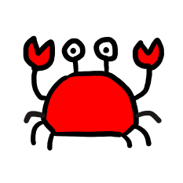

Kani-bot (かにbot) ってなんなのさ
どっかの誰かが、botの作り方とかスクリプトの書き方とかを勉強をしていたら産まれたbotです。
完全にお遊びなので、ガバガバな部分が多々あると思います。いっときの暇つぶし程度に遊んでいただけたら幸いです。
暇つぶせるほど機能ないけどね。まいった。
完全にお遊びなので、ガバガバな部分が多々あると思います。いっときの暇つぶし程度に遊んでいただけたら幸いです。
暇つぶせるほど機能ないけどね。まいった。

私がカニです。